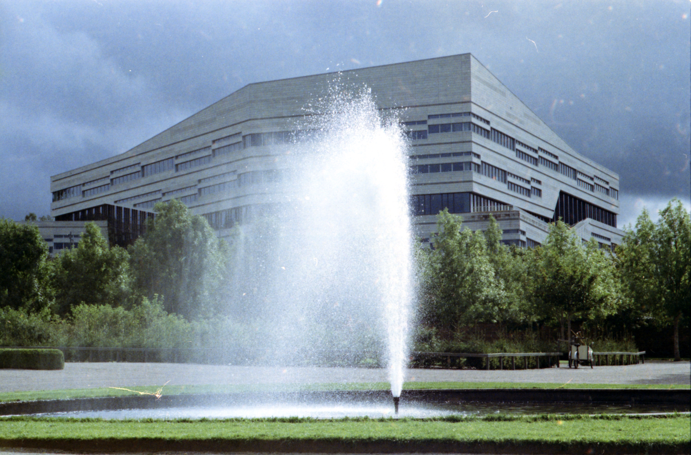
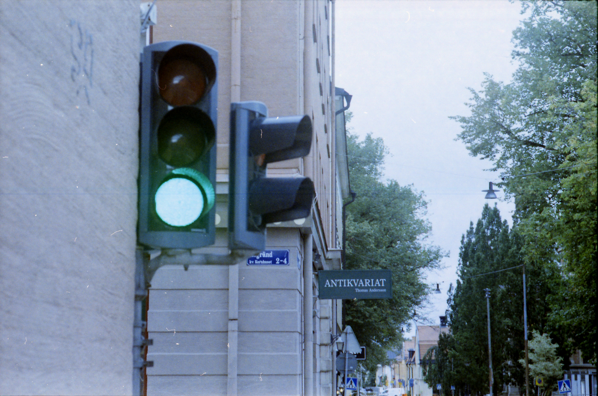
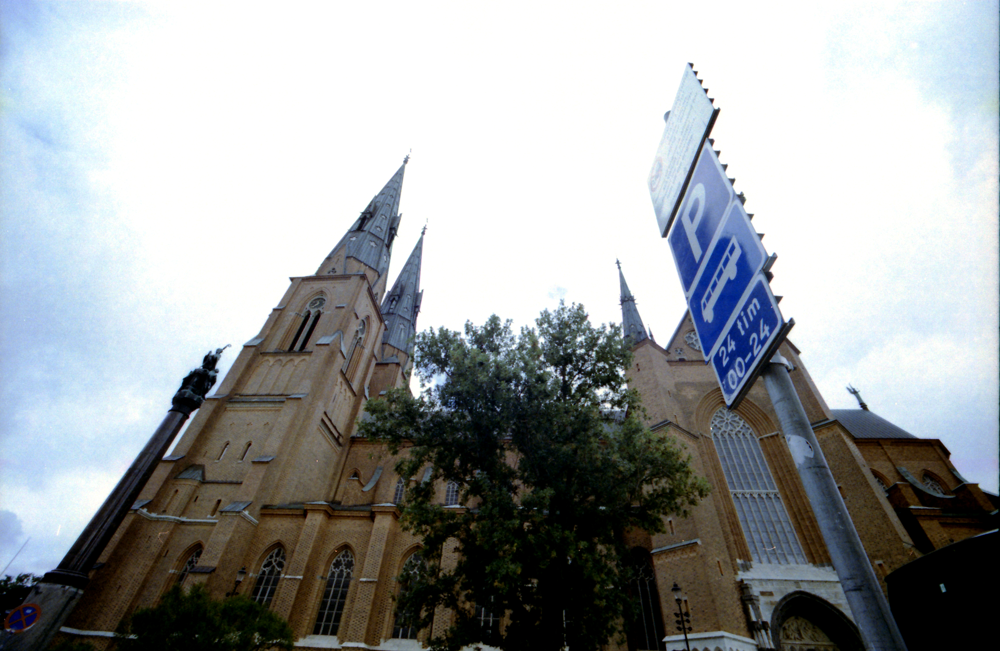
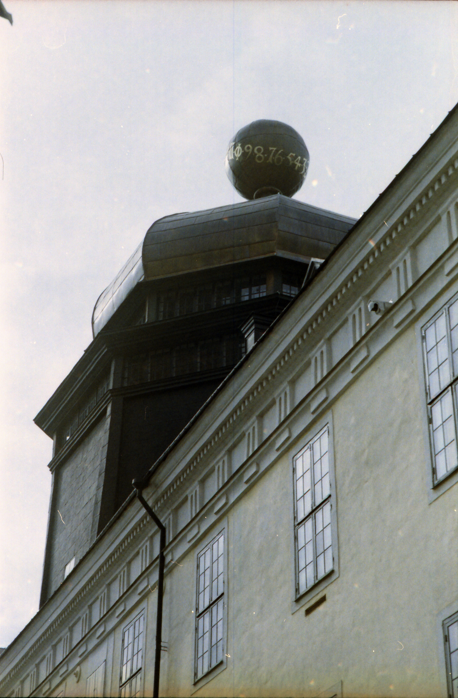

When one thinks of Uppsala there are a lot of things that can come to mind. Old buildings, royal influence and both a modern and traditional campus-site. At least that was what I thought before I visited the city a few months ago. What I found were open people, an urban vibe and places to develop oneself for good.
But let me start from begin. Back in september I was looking for a masters program to study after my bachelor studies. A very promising institute is located in Sweden, I found out. I never thought that I’d get that fast of a reply to my mail to them in which I asked if I could take a look on the campus and ask a few questions. I even got invited to visit an ongoing lecture as a guest. If that’s not an offer I don’t know what is. So I packed my rucksack and booked the flight. And there I was: from Arlanda to Uppsala in just 20 minutes. I was quite impressed by that velocity. Approaching the city by an hour before midnight my adventurous desires were stopped at first by the night. There isn’t much to explore in a city by that time of the day if you don’t know anyone yet. So I wandered to my residence of choice - in my case a room in an apartment of a very friendly mother, her child and a student that rented his room for the whole semester. An unusual commune. But it would work out as I was just staying for a few days. I had my barriers with communication - I can be very awkward in these situations as I normally would never live in a shared apartment- especially because the mother lacked of speaking english. So our conversations were sered with foot and hand raising but it was nice. The yard I could see from my window had a charming and relaxing effect on me and I took a chance now and then to sit down at the desk and write postcards to family, friends and even an old teacher of mine.
The next day: exploring the city and visiting the campus. I had an appointment at two p.m. with my contact from the university I mailed to. I’ll be able to ask about everything I’m concerned of my future studies here. But first came first and that’s central Uppsala. I was eager to get to know more sights around here. Missed the bus into town but I was gonna walk sooner or later anyway. So why not start now? I promenaded past hairdressers, cafés, different shops and a weird looking building because there’s a green tinnish roof with a marble like top on it. Having walked half an hour I passed the crowded centre and came to a high ground. On it crosses the Carolina, the universitys library, Uppsalas castle and a park. This must be the English park. Streams of students have their ways around here, also a few elder between them. All moved towards the park or away from it, probably in search of nourishment? I wouldn’t know. Anyway, I still had half an hour before my appointment. So why not going into the park. It looked delightful.

When I sat infront of this fountain I was part of a conspiring circle of park benches who declared to never leave site of this watery spectacle. Endorsed through pastdriving bikes and promenading students we took some time to do an inventory: the main campus with the Carolina library and Blåsenhus are now within footreech and always environed by the green English park, where we were found to be, infront of the castles hill. Even from one of the more western parts of the city like Eriksberg or Hamberg it only takes about ten minutes of cycling to be here.
Facit of our mere quiet conference: it is astonishing how compact Uppsala can be. But enough of that. The meeting is in five minutes so I better got to Blåsenhus. Searching the entry for another 5 minutes I got into the main hall quite stressed but happy to have found the person I wrote with already. My main concerns about the application process like the fact that my bachelor thesis was going to be written in my origin language but neither English nor Swedish weren’t so much of a worry after the talk. It comes as Uppsala University has some pretty good translators for most european languages. So I got more into the structure of the institute.
Qualitative or quantitative? What kind of focusses? Size of lectures and seminars? Sounded pretty good, all in all. Directly after conversation I was led to the lecture I was allowed to attend as visitor. Quite confusing room numbers but we made it to the correct one. Not too many, not too less students sat in the lecture. Having not read the literature for today I found it still quite comfortable chatting with others or asking. The atmosphere was more relaxed as I knew it from my home university. Another good sign. After lecture I was picked up by a current student who was so friendly to let me ask further questions more on a student life level. I was going to be fine - at least financially. A good result for my first day in town.

Later I walked back into the older and central part of the city. I was happy to find many different shops, especially of food but also books. I decided to stop by to have some kebab for lunch. So I found out that at least in this diner there wasn’t much of the kebab spirit I knew from my home country. But it did the job. Saturated I went on looking for book shops. Sadly the Antiquariat on the picture above was closed already and by now is permanently closed. But there were others too. I liked the English bookshop best. Here you can find a great selection of current and classic English literature.

I bought a book and went to sit down near the dome. It is probably the most remarkable building of whole Uppsala. You can see the dome from almost any place if nothing is in the way of sight.

In its direct near is the Gustavium, a building administrated by the university with a museum in it for collections of art and historical objects. This is the same building with a green roof I was referring to at the begin of my walk today. The marble is in reality a sunclock and its name is of course from former King Gustav II. Adolf. The end of my day marked a visit of a nation. I was told by the kind current student that anyone can join fika even if one isn’t in any nation nor student at the university. So I went to a nice old nations house nearby and had two cups of coffee. A bitter mistake as I would know by the night. I’m not that much of a coffee drinker. I’m used to caffeine but not the high dosis coffee provides. Besides the fact that I wouldn’t sleep this night the fika was very fun. I got to read more of my book in peace as these places are both used for chatting and studying. I even overheard some conversation in my origin language.
I might have not slept this night but I had plenty of time to make things up for my plans. I would definitely apply for Uppsala university. The city seemed to be fun, here is a lot to discover and a nice student life to connect too.